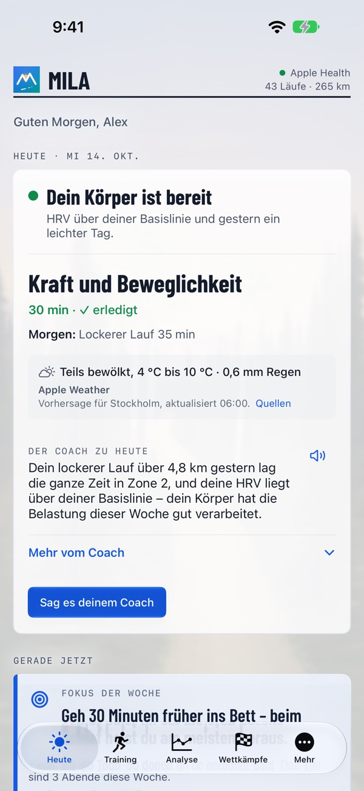
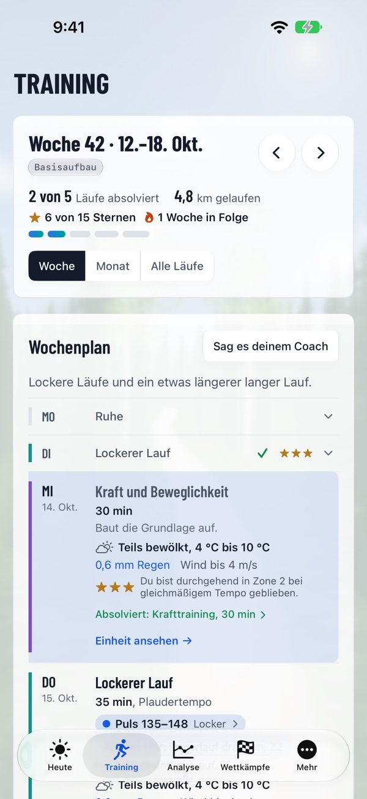
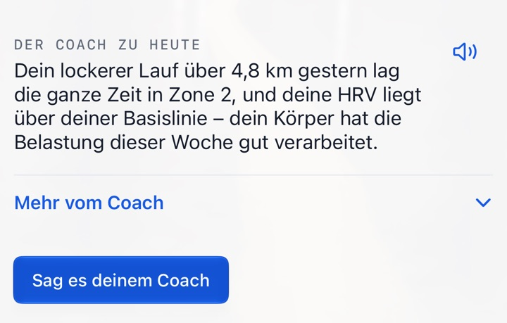

Der richtige Lauf am richtigen Tag.
Ein Coach, der jeden Morgen deinen Körper und deinen Alltag im Blick hat – bis ins Ziel.
Mila geht von deinen eigenen Daten, deiner Form heute und deinem Ziel aus. Jeden Morgen kommt zuerst die Ansage des Coachs – bereit, normaler Tag oder ruhig angehen –, dann die heutige Einheit, wie sie jetzt aussieht: Training, das zu deinem Leben passt, dich stärker auf dein Ziel hin macht und dir kein einziges Diagramm zum Entschlüsseln hinlegt.



Mehr vom Training, weniger zum Grübeln
Jeden Tag die richtige Einheit – danach, wie es dir geht und wie dein Alltag aussieht.
Warum Mila anders ist
Deine Uhr misst. Mila macht daraus die richtige Einheit für dich.
Ein Coach, nur einen Tipp entfernt
Jeden Morgen bekommst du die Ansage des Coachs und die heutige Einheit, die beste Zeit zum Laufen und was du bei dem Wetter anziehst. Die Notiz kannst du dir vorlesen lassen. Ändert sich dein Leben, sag es deinem Coach mit eigenen Worten, und wenn du etwas wissen willst, frag den Coach – die Antworten kennen deine Daten. Zum Wochenende – Sonntagabend oder spätestens Montagmorgen – kommen der Wochenrückblick und der Plan für die nächste Woche.

Mila am Handgelenk
Milas App auf der Apple Watch zeigt deinen Tag, zeichnet deinen Wettkampf auf und fragt, wie der Lauf war. Andere Uhren funktionieren über Apple Health.
Alles, was Läuferinnen und Läufer brauchen
Vom ersten lockeren Lauf bis zum Wettkampftag.
Wochenplan und Analyse
Ein Wochenplan mit Kraftprogrammen und Einheiten, die du verschieben kannst. Nach dem Lauf Plan vs. gelaufen, die Strecke nach Pace gefärbt und ähnliche Läufe. Deine Muster, Im Vergleich mit, Rekorde im Verlauf und Mein Laufjahr.
Milas Wettkampfverzeichnis
Offizielle Wettkämpfe mit Karte, Höhenprofil, Verpflegungsstellen und Link zum Veranstalter – oder lade die Strecke selbst hoch (GPX, KML, TCX oder ZIP). Jeder Wettkampf im Verzeichnis hat auch eine eigene Seite: milacoach.app/de/laeufe.
Vor und nach dem Wettkampf
Prognose, Pace-Plan nach dem Höhenprofil, Verpflegungsplan, Bin ich bereit?, Wettkampf-Guide und Wettkampfmorgen. Danach Kilometerzeiten im Vergleich zum Plan, die Rennanalyse des Coachs und dein offizielles Ergebnis.
Laufstil
Filme in der App oder wähle ein Video. Nur Standbilder werden gesendet, mit unkenntlich gemachten Gesichtern, und das Video verlässt nie dein iPhone. Der Coach gibt Beobachtungen und Übungen, baut sie in deinen Plan ein und verfolgt sie über die Zeit.
Schuhe
Der Coach schätzt, wie lange jeder Schuh für dich hält – ungefähr wie viele Kilometer und Wochen in deinem Tempo. Importiere deine Schuhliste aus einem Bild oder einer CSV-Datei.
Essen
Fotografiere oder beschreibe eine Mahlzeit, dann schätzt der Coach sie ein und bezieht sie auf dein Training. Korrigiere sie mit eigenen Worten, zeig sie ohne Zahlen an oder trag sie mit Siri ein.
Teilen
Bilder von Läufen und Wettkämpfen mit einem Hintergrund im Mila-Stil passend zum Ort, einem Textvorschlag und einer Zeile vom Coach.
Im Kalender
Die Läufe des Coachs in dem Kalender, den du wählst, zur besten Zeit fürs Wetter.
In wenigen Minuten startklar
Erzähl dem Coach von dir und deinem Ziel, sieh, wie er dich verstanden hat, und bekomm deine erste Woche. Teste Mila Coach eine Woche gratis.
Funktioniert mit deiner Uhr
Mila liest deine Läufe aus Apple Health, du brauchst also keine bestimmte Uhr.
Deine Daten bleiben deine
Daten aus Apple Health werden auf deinem iPhone gelesen; eine Zusammenfassung geht an den Coach, nach deiner Einwilligung, zusammen mit das, was du verbindest oder sendest (Polar, Mahlzeitenfotos, Bilder deiner Schuhliste, Standbilder aus Laufstilvideos). Dein Konto wird in der EU (Irland) gespeichert. Die Texte des Coachs schreibt ein externer KI-Dienst in den USA auf Grundlage der EU-Standardvertragsklauseln. Mila verkauft deine Daten nie und nutzt sie nie für Werbung, und du kannst dein Konto mit allem darin jederzeit löschen. Mila gibt allgemeine Trainingsempfehlungen, keine medizinische Beratung.